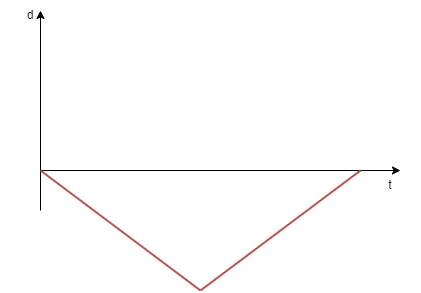

Mechanics (yellow practice)
Uniform motion

To solve this question, firstly, we have to find what distance was covered during the first \(1.5 h\) by substituting the speed equation with the values given: $$v = \frac{s}{t}$$ $$70 \frac{km}{h} = \frac{s}{1.5 h}$$ $$s = 105 km$$

From the graph we can conclude that at the beggining the object is moving at a constant negative velocity which means that it is backing from the initial place,
then the velocity value suddenly changes to the exact opposite which means that it is moving forward untill it comes to the same place:
